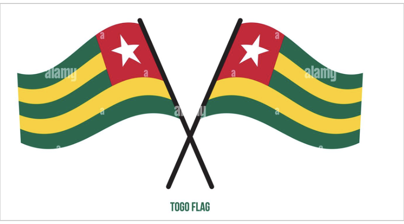

Le Togo est un pays d'Afrique de l'Ouest situé dans le golfe de Guinée. Il est connu pour ses
plages bordées de palmiers et ses villages au sommet des collines.
La région du Koutammakou est habitée par
le peuple des Batammariba, occupant des huttes en argile traditionnelles ressemblant à des forteresses qui
remontent au XVIIe .
La capitale Lomé est dotée d'un bazar sur plusieurs étages appelé Grand Marché
ainsi que du Marché aux fétiches qui propose des remèdes et des talismans traditionnels en rapport avec
le culte vaudou. La bordure cotière est l'une des richesse du pays mais avec l'érosion rend inquiétant les habitation cotière